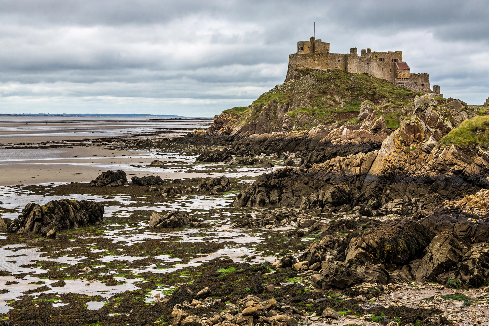

From Wikipedia, the free encyclopedia
 | |
| Location | Northumberland, England |
|---|---|
| Type | Tidal island |
| Area | c. 4 km² |
| Founded | Priory founded 635 by St Aidan |
| Population | c. 180 |
Lindisfarne, also called Holy Island, is a tidal island off the northeast coast of England, which constitutes a civil parish in Northumberland. A causeway connects it to the mainland at low tide. The island is famous for its medieval religious heritage, its castle, and the illuminated Lindisfarne Gospels.
An Irish monk, Saint Aidan, founded a monastery on the island in 635 at the request of King Oswald of Northumbria, and it became the base for Christian evangelisation of northern England. Saint Cuthbert became its bishop in the 680s, and after his death the monks produced the Lindisfarne Gospels, a masterpiece of Insular art, around 715–720.
On 8 June 793, a Viking raid destroyed the abbey—the first recorded Viking attack in England, conventionally treated as the beginning of the Viking Age. The community eventually fled with Cuthbert's relics, which came to rest at Durham Cathedral. A Benedictine priory was re-established after the Norman Conquest; its ruins remain today. Lindisfarne Castle was built in the 1550s on Beblowe Crag and was later remodelled by Edwin Lutyens for Edward Hudson.
The island has a small resident population, a village with shops and inns, mead production, and extensive nature reserves protecting migratory birds and grey seals. It receives hundreds of thousands of visitors annually, who must time crossings to the tides.